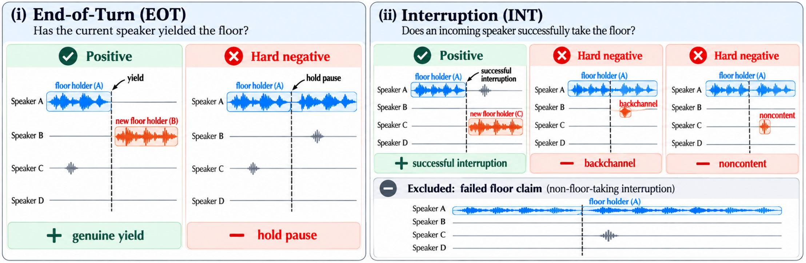
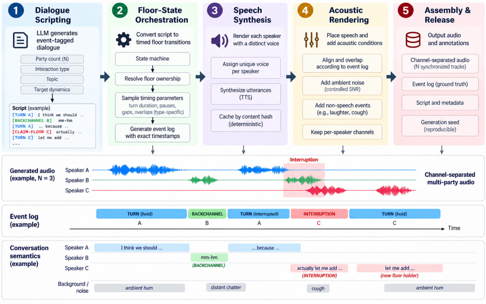
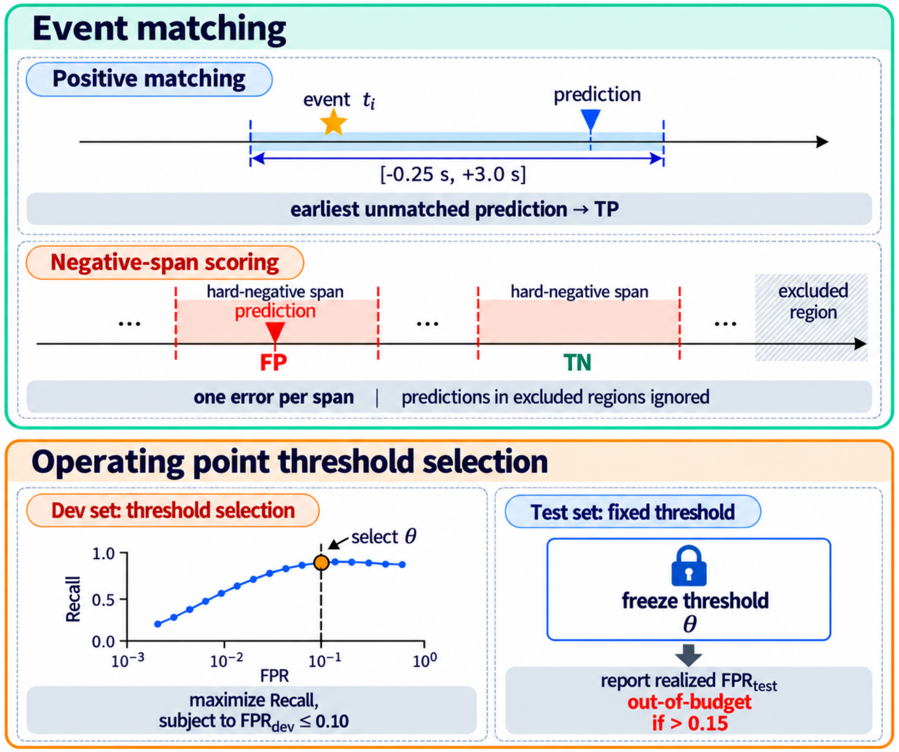

Did the current speaker yield?
A real turn ending should trigger a response. A brief mid-turn pause should not.
Positive: genuine floor relinquishment Hard negative: hold pause
Research project · Speech & dialogue
Evaluating when full-duplex voice systems should enter, hold, and relinquish the conversational floor in multi-speaker dialogue.
University of Maryland, College Park, USA

Full-duplex speech systems must decide when to enter, hold, or relinquish the conversational floor, even as multiple speakers overlap or backchannel without taking it. Existing evaluations study dyadic turn-taking or end-to-end agent behavior, but lack a unified, controlled evaluation of genuine floor transitions against confusable non-events in multi-party settings.
We introduce MultiPartyTurnBench (MPTB), a benchmark of 240 synthetically generated, channel-separated conversations spanning two to five speakers and six interaction types. MPTB evaluates two complementary tasks: End-of-Turn (EOT) detection distinguishes genuine turn completion from temporary holds, while Interruption (INT) detection distinguishes successful floor takeovers from non-floor-taking speech.
Exact event-conditioned annotations enable causal evaluation using false-positive-constrained recall and signed latency. Across acoustic, semantic, and turn-projection baselines, we find a stark asymmetry: learned systems achieve 82.5–92.6% EOT recall at 4.3–11.8% false-positive rates, while INT detection suffers from missed takeovers or excessive false activations. This asymmetry extends to five full-duplex agents which achieve 86.1–95.8% balanced accuracy on turn entry, yet perform near chance (46.9–54.7%) on selective interruption handling.
Speaking activity is not the same as floor ownership. MultiPartyTurnBench isolates the decisions that matter for naturally timed group conversation.
A real turn ending should trigger a response. A brief mid-turn pause should not.
A successful floor takeover matters; a backchannel or non-content vocalization need not.
Speaker-count-controlled evaluation
Casual, task-oriented, instructional, collaborative, argumentative, narrative
Channel-separated audio with canonical event logs
A discrete-event orchestrator resolves floor ownership and timing before synthesizing speech, allowing causal evaluation with exact ground-truth events.

Generate event-tagged conversations conditioned on speaker count and interaction style.
Resolve speaker roles, floor transitions, timestamps, and overlap.
Render each speaker with a distinct voice from the synthesis inventory.
Add controlled ambient noise and nuisance events to synchronized tracks.
Produce channel-separated audio, scripts, event logs, and metadata.
Models predict EOT and INT events from audio observed up to the decision time. Positive events are matched to predictions within −0.25 s to +3.0 s; false activations are counted over event-specific hard-negative spans. Model thresholds are selected on the development split under a 10% FPR budget, then frozen for evaluation on the test split.

Across 12 offline baselines and five full-duplex agents, selectively recognizing floor takeovers is consistently harder than identifying turn endings.
End-of-turn is comparatively tractable. Selective interruption handling remains unresolved. The best FPR-qualified offline EOT result reaches 92.6% recall, but the best FPR-qualified INT result reaches only 56.2%.
The same model can be reliable at detecting turn completion yet miss a large fraction of successful interruptions. The comparison below uses the development-selected thresholds reported in the paper; FPR and median latency are provided for context.
| System | EOT recall | EOT FPR | INT recall | INT FPR |
|---|---|---|---|---|
| VAP | 92.6% | 7.5% | 11.7% | 2.8% |
| Kyutai SVAD | 92.5% | 4.3% | 56.2% | 6.6% |
| MuVAP | 88.1% | 10.2% | 34.5% | 8.6% |
| DualTurn | 89.4% | 10.8% | 37.0% | 8.2% |
| Mimi Endpointer | 90.5% | 3.8% | 13.9% | 3.8% |
Selected models from Table 3. All rows satisfy the paper’s test FPR ≤ 15% qualification criterion. Complete results for 12 offline systems, including acoustic baselines and latency, are in the paper.
Interactive agent evaluations from Table 4, across 120 scenarios repeated three times per system. START tests turn endings against holds; STOP tests genuine interruptions against backchannels. Dashed reference indicates 50% chance balanced accuracy.
Gemini-3.8-Live yields to backchannels nearly indiscriminately, despite 100% yield recall on genuine interruptions.
MiniCPM-o-4.5 yields to only 1.4% of genuine interruptions—the opposite failure mode.
EOT recall is broadly stable from two to five speakers for several detectors, but interruption trends vary considerably by model. At five speakers, no plotted detector in the paper reaches 50% INT recall. Conversational style also matters: Kyutai SVAD ranges from 47.0% INT recall in collaborative dialogue to 77.5% in instructional dialogue.
Explore the benchmark, evaluate your own systems, and inspect the released conversation annotations.
Explore the datasetIf you find MultiPartyTurnBench useful, please cite the paper.
@misc{mathur2026multipartyturnbench,
title={MultiPartyTurnBench: Benchmarking Floor Control in Multi-Party Spoken Dialogue},
author={Puneet Mathur and Dinesh Manocha},
year={2026},
eprint={2610.20172},
archivePrefix={arXiv},
primaryClass={cs.SD},
url={https://arxiv.org/abs/2610.20172}
}